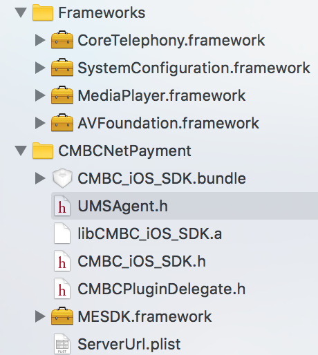
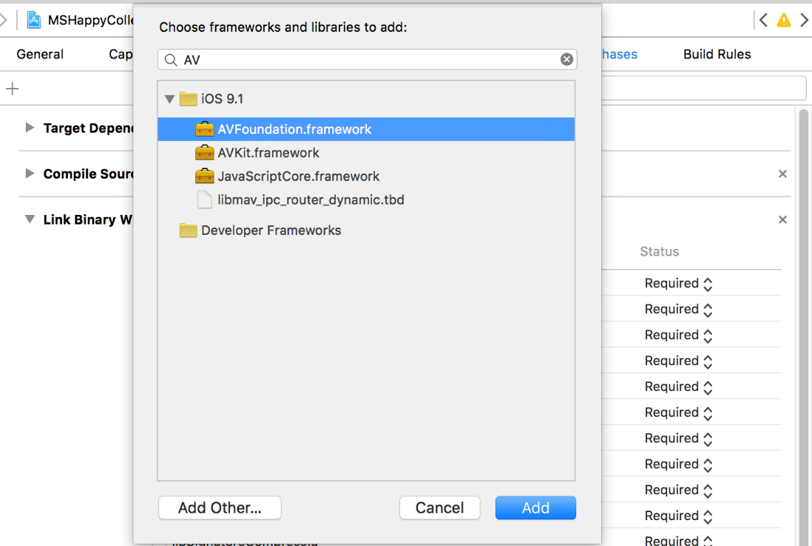
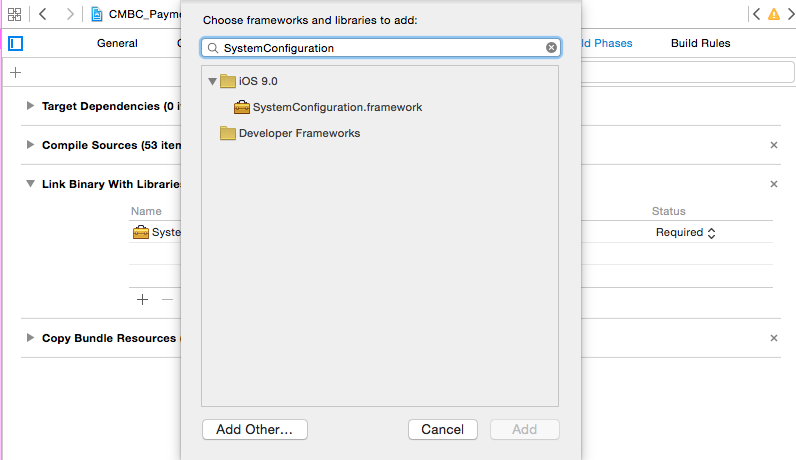
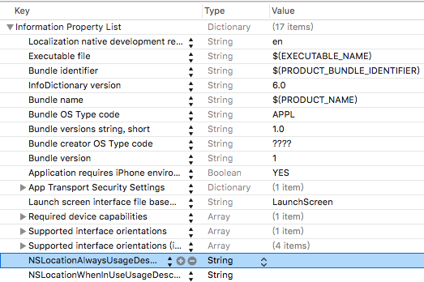

阅读对象
民生银行为合作的移动收单商户提供了SDK接入的方式，本文档主要介绍合作机构的开发者如何通过集成支付SDK来完成移动收单功能，该文档主要面向机构Android App和iOS App的开发人员。
版本说明
| 当前版本 | V1.0 | 版本操作 | 赵琦 |
准备工作
机构在与民生银行完成线下协议签订后，由总行乐收银商务平台管理员在乐收银商务平台开立机构平台号，平台号唯一，机构真实进行交易的商户须在民生乐收银商务平台开通商户，开通商户后，会生成民生银行商户号，民生会为每一个机构平台发放用于订单加密加签和解密验签的的通信证书。证书由商户后台保存，用于完成与民生银行之间数据加密解密工作。
收单SDK开发需要与商户后台开发同时进行，SDK接入流程如下：
1、商户后台开发：根据SDK商户后台开发指导，在商户后台集成民生通信证书，根据不同的功能API字段完成相关功能的请求字段签名、加密工作。
2、商户APP集成SDK：在商户原有APP基础上集成民生移动收单SDK，根据本指导，完成SDK各模块的集成开发工作。
3、商户APP调用SDK发起收款等功能测试工作：在APP配置文件中填写UAT测试环境地址，完成各模块的联调工作。
4、商户APP上线验收工作：在确保测试环境联调无误后，将APP配置文件中UAT环境参数改为生产环境参数，进行最后的生产环境下调试验证工作。
专有名词解释
| 名词 | 名词解释 |
|---|---|
| 通用接口 | 通用接口代表Android、iOS平台均可以通过调用该接口完成相应的收款功能。通过连接MPOS可以完成账单打印、获取设备信息、查询余额等功能 |
| 智能POS接口 | Android系统通过调用智能POS接口完成对应的查询余额、付款、获取终端对应参数的功能。 |
SDK业务流程
接入流程图

商户系统集成SDK后下单主要交互说明：
步骤1：在商户APP中选择对应的服务或商品，发起下单申请给后台；
步骤2：商户后台将订单信息用本地通信密钥签名并加密，将密文传至SDK；
步骤3：收单SDK将加密订单信息发送至民生银行收单网关；
步骤4：收单SDK会发起和民生银行建立安全通道；
步骤5：银行端将解密后的订单信息在安全通道上返回；
步骤6：收单SDK发起下单请求；
步骤7：民生系统完成订单校验并完成下单支付操作；
步骤8：收单SDK发起支付查询结果。
步骤9：收单SDK收到支付结果后在商户App端显示支付结果。
步骤10：异步通知商户后台支付结果。
目录结构
苹果支付插件包含文件如下：
配置文件
配置文件server.plist的详细字段说明，请见API列表—APP配置文件字段
添加SDK步骤说明
将CMBCNetPayment 文件下的所有文件拖入到工程中，添加依赖框架 AVFoundation.famework , SystemConfiguration.framework , MediaPlayer.framework , CoreTelephony.famework；添加完库后需要在Xocde的Build Settings 下 Other Linker Flages 里面加入-ObjC标志,因为工程中使用了Objective-C的重要特性：类别（Category）有关，主要作用是将静态库文件中所有的和对象有关的文件加载进来。
（图1.1）添加AVFoundation库
（图1.2）添加SystemConfiguration库

(图1.3)在Build Settings的Other Linker Flags 下添加-ObjC和-lstdc++

(图1.4)在Build Settings的Other Linker Flags 下添加-ObjC
2、在Info.plist文件中添加如下配置：
（1）NSLocationAlwaysUsageDescription
（2）NSLocationWhenInUseUsageDescription
根据需求,SDK集成了移动应用统计分析服务,该服务是一个能够采集,存储和分析移动应用数据的通用服务,因此集成SDK前需要做如下配置:
在 AppDelegate.h 中添加,#import "UMSAgent.h"。在 AppDelegate.m 中的 didFinishLaunchingWithOptions 函数添加如下函数调用:
-(BOOL)application:(UIApplication*)application didFinishLaunchingWithOptions:(NSDictionary *) launchOptions
{
[UMSAgent startWithAppKey:@"a406b0d026ca11e6a454b82a72db4265"
ReportPolicy:REALTIME serverURL:@"https://gd.cmbc.com.cn"];
}
接口调用说明
收款
+ (UIViewController *)invokePaySDK: (NSString*)orderinfo TradeType:(int)tradeType Delegate:(id<CMBCPluginDelegate>)delegate;
示例代码：
UIViewController *CMBC_sdk = [CMBC_iOS_SDK invokePaySDK:orderinfo TradeType:0 Delegate:self];
if (self.presentedViewController == nil)
{
[self presentViewController:CMBC_sdk animated:YES completion:nil];
}
回调参数见API列表—APP接口参数字段
收款结果回调
需要服从CMBCPluginDelegate.h文件中的代理协议
-(void)callBackErrorCode:(int)errorCode ErrorMessage:(NSString*)errorMessage Remark:(NSString *)remark;
示例代码:
- (void)callBackErrorCode:(int)errorCode ErrorMessage:(NSString *)errorMessage Remark:(NSString *)remark
{
NSLog(@"%@",remark);
}
回调参数见API列表—APP结果回调字段
获取版本
功能描述：用于获取SDK版本信息。
调用代码示例如下：
SDKTrade sdkTrade = SDKTrade.getInstance(); //获取SDKTrade实例，调用sdkTrade.getVersion(); String version = SDKTrade.getInstance().getVersion();
获取蓝牙名和设备ID
功能描述：用于获取蓝牙名和设备ID（序列号）
调用代码示例如下：
SDKTrade.getInstance().startDeviceManager(getActivity(),new TradeListener() {
@Override
public void onResult(int errorCode, String errorMessage,
String remark) {
}
});
回调参数见API列表—APP接口参数字段
获取当前已连接设备ID
功能描述：用于获取设备ID（序列号）
调用代码示例如下：
SDKTrade.getInstance().queryDeviceId(getActivity(), new TradeListener() {
@Override
public void onResult(int errorCode, String errorMessage, String remark) {
}
});
回调参数见API列表—APP接口参数字段
搜索并连接MPOS
+ (void)startDeviceManagerWithDelegate:(id<CMBCPluginDelegate>)delegate;
示例代码：
[CMBC_iOS_SDK startDeviceManagerWithDelegate:self];
搜索并连接MPOS结果回调
需要服从CMBCPluginDelegate.h文件中的代理协议
-(void)callBackErrorCode:(int)errorCode ErrorMessage:(NSString*)errorMessage Remark:(NSString *)remark;
示例代码:
- (void)callBackErrorCode:(int)errorCode ErrorMessage:(NSString *)errorMessage Remark:(NSString *)remark
{
NSLog(@"%@",remark);
}
回调参数见API列表—APP结果回调字段
获取当前已连接设备ID
+ (void)queryDeviceId:(void (^)(NSString *errorCode,NSString *errorMessage,NSString *deviceId))deviceId;/
示例代码：
[CMBC_iOS_SDK queryDeviceId:^(NSString *errCode,NSString*errMessage,NSString*deviceId) {
UIAlertView *alert = [[UIAlertView alloc]initWithTitle:@"友情提示" message: [NSString stringWithFormat:@"%@,%@,%@",errCode,errMessage,deviceId]delegate:self cancelButtonTitle:@"确定" otherButtonTitles: nil];
[alert show];
}];
回调参数见API列表—APP结果回调字段
余额查询
+ (UIViewController *)queryBalanceSuccess:(BalanceSuccessBlock)successBlock fail:(BalanceFailBlock)failBlock;
示例代码：
UIViewController *CMBC_sdk = [CMBC_iOS_SDK queryBalanceSuccess:^(NSDictionary *dic) {
} fail:^(int code, NSString *processMsg) {
}];
[self presentViewController:CMBC_sdk animated:NO completion:nil];
回调参数见API列表—API结果回调字段APP配置文件字段
获取当前SDK的版本号
+ (NSString *)getVersion;
示例代码:
NSString *version = [CMBC_iOS_SDK getVersion];
动态设置SDK连接服务器地址
+ (void)setReceiveOrderServerUrl:(NSString *)url;
示例代码:
[CMBC_iOS_SDK setReceiveOrderServerUrl:@"https://111.205.207.103/mobilePlatform"];
获取收单所连的URL地址
如果调用+ (void)setReceiveOrderServerUrl:(NSString *)url后，读取的URL地址为所设置的地址，否则读取ServerUrl.plist文件中payOrderServerUrl对应的地址
+ (NSString *)getReceiveOrderServerUrl;
示例代码:
NSString * receiveOrderServerUrl = [CMBC_iOS_SDK getVersion];
设置支付ServerUrlURL地址
+ (void)setPayOrderServerUrl:(NSString *)url;
示例代码:
[CMBC_iOS_SDK setPayOrderServerUrl:@"http://111.205.207.103:18180/pay"];
读取支付所连的URL地址
如果调用+ (void)setPayOrderServerUrl:(NSString *)url后，读取的URL地址为所设置的地址，否则读取ServerUrl.plist文件中payOrderServerUrl对应的地址
+ (NSString *)getPayOrderServerUrl;
示例代码:
NSString * payOrderServerUrl = [CMBC_iOS_SDK getPayOrderServerUrl];
APP配置文件字段
| 字段名 | 字段说明 | 内容示例 |
|---|---|---|
| https | 是否采用https | 请求方式 YES 是 NO 否（Android无需此字段） |
| receiveOrderServerUrl | 收单服务器地址 | receiveOrderServerUrl = http://111.205.207.103 /mobilePlatform |
| payOrderServerUrl | 支付服务器地址 | payOrderServerUrl = http://111.205.207.103 /pay |
| publicKeyStr | 民生公钥 | publicKeyStr = MIGfMA0GCSqGSIb3DQEBAQUAA4GNFkBXr2pxW75JhVQpejlnxd |
| isSCAP | 验证服务器签名检测，为true是进行验签，false不验 | isSCAP = true |
| isGPS | POS防移机，当为true的时候检测地理位置 | isGPS = true |
| isUpdateMpos | 是否检查Mpos固件更新，为true时检查，false时不检查固件更新 | isUpdateMpos = true |
APP接口参数字段
Andriod参数：
| 字段名 | 字段说明 |
|---|---|
| mContext | 安卓应用上下文 |
| orderinfo | 商户订单信息 |
| tradeType | 调用SDK标识： 0,收单 1,支付 |
| TradeListener | 交易状态回调 |
iOS参数：
| 字段名 | 字段说明 |
|---|---|
| orderinfo | 商户订单信息 |
| tradeType | 调用SDK标识：0,收单1,支付 |
| delegate | 交易状态回调 |
APP结果回调字段
1、回调字段
| 字段名 | 字段说明 |
|---|---|
| errorCode | 交易状态：0失败1成功 |
| errorMessage | 错误提示信息 |
| remark | 字段说明如下 |
2、remark字段：
格式：key=value&key=value&key=value
| 接口类型 | 成功回调结果示例 | 说明 |
|---|---|---|
| 收款接口回调(仅刷卡有remark) | amount=1&transTime=20160314100705&batchNo=000001&voucherNo=000040&refNo=607410113764 | 金额：amoun 时间：transTime 批次号：batchNo 凭证号：voucherNo 参考号：refNo |
| 获取当前已连接设备ID回到 | deviceId=123456789. | 返回设备ID（序列号），格式为： deviceId=设备ID |
| 搜索并连接POS回调 | bluetoothName=CMBC-A123456&deviceId=123456789 | 返回结果包含蓝牙名和设备ID（序列号），格式为：blueToothName=蓝牙名&deviceId=设备ID |
APP打印功能接口参数字段
注：POS打印每行384像素点，offset 加上文字大小或二维码大小（qrcodeSize）之和应该不小于0，不大于384.
表1：frontType打印字体
| 取值 | 打印字体说明 |
|---|---|
| 1 | 16X8西文点阵占用8X16像素点16X16汉字点阵占用16X16像素点 |
| 2 | 12X24西文点阵占用12X24像素点24X24汉字点阵占用24X24像素点 |
表2：frontScale打印格式
| 取值 | 打印格式说明 |
|---|---|
| 1 | 1倍宽 1倍高 |
| 2 | 1倍宽 2倍高 |
| 3 | 1倍宽 3倍高 |
| 4 | 2倍宽 1倍高 |
| 5 | 2倍宽 2倍高 |
| 6 | 2倍宽 3倍高 |
| 7 | 3倍宽 1倍高 |
| 8 | 3倍宽 2倍高 |
| 9 | 3倍宽 3倍高 |
MPOS固件版本
| MPOS型号 | 版本 |
|---|---|
| 联迪M35 | CMBC-A-V20160619 |
| 联迪M35F | CMBC-F-V20160619 |
| 联迪M36 | CMBC-B-V20160619 |
| MPOS型号 | 版本 |
| 新大陆 | CMBC-C-V20160616 |
| 百福D180 | CMBC-E-V20160616 |
查余成功结果回调字段
| key | 类型 | 说明 |
|---|---|---|
| amount | String | 金额，单位为分 |
| issBankNo | String | 发卡行号 |
| cardNo | String | 银行卡号 |